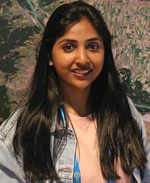

2024 appointment
Project Scientist-II
Indian Institute of Tropical Meteorology · Pune, India
Climate variability, prediction and fluid dynamics, including decadal prediction of Indian river-basin hydrology. Appointment began in April 2024.
Profile
Roma Varghese holds a PhD in Earth System Science and Technology from IIT Kharagpur, with research expertise in ecohydrodynamics and physical oceanography.

Roma Varghese, PhDResearch perspective
Research focuses on the environmental impacts of climate variability and change through monsoon rainfall and vegetation of the Indian subcontinent.
A background spanning civil engineering, ocean technology and Earth system science supports work across hydrological processes, terrestrial ecosystems and tropical climate connections.
Download CVResearch experience
Indian Institute of Tropical Meteorology · Pune, India
Climate variability, prediction and fluid dynamics, including decadal prediction of Indian river-basin hydrology. Appointment began in April 2024.
Japan Agency for Marine-Earth Science and Technology · Yokohama, Japan
International training in sustained ocean observations and applications.
National Institute of Oceanography · Goa, India
Chlorophyll-a variability and phytoplankton community structure in the southeastern Arabian Sea.
Education
Indian Institute of Technology Kharagpur
Tropical ocean teleconnections with gross primary productivity of monsoon Asia, with emphasis on India.
Cochin University of Science and Technology
University first rank and gold medal · CGPA 9.08
Cochin University of Science and Technology · Toc H Institute of Science and Technology
CGPA 8.27
Technical expertise
Recognition
INTROMET · Indian Institute of Tropical Meteorology, Pune
International research training in Japan
American Geophysical Union Fall Meeting
Indian Institute of Technology Kharagpur
MTech in Ocean Technology · CUSAT
Science communication
Science Journalism training through the Indian Science Communication Society, completed in 2025 with an A+ grade.
Field experience
Fieldwork across coastal Kerala, the Mandovi Estuary in Goa, the Bhitarkanika mangroves and Similipal Biosphere Reserve in Odisha.